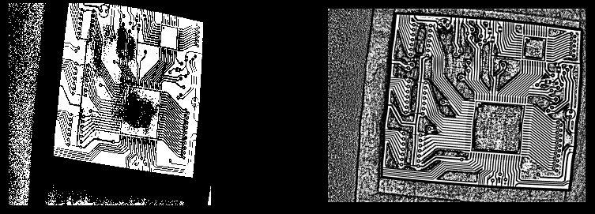
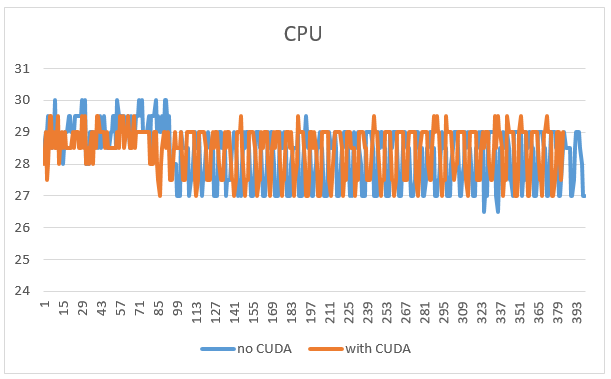
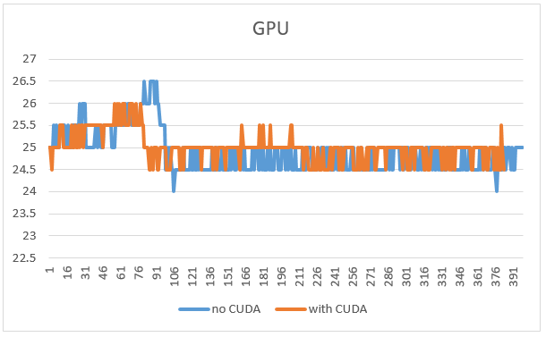

Niblack Binarization
What is binarization
Image binarization is the process of taking a grayscale image and converting it to black-and-white, essentially reducing the information contained within the image from 256 shades of gray to 2: black and white, a binary image. This is sometimes known as image thresholding, although thresholding may produce images with more than 2 levels of gray. It is a form or segmentation, whereby an image is divided into constituent objects. This is a task commonly performed when trying to extract an object from an image. However like many image processing operations, it is not trivial, and is solely dependent on the content within the image. The trick is images that may seem easy to convert to B&W are many times not.
a very good explanation can go trough this website:
https://craftofcoding.wordpress.com:
https://felixniklas.com/imageprocessing/binarization:
Image Binarization (Simple)
1 2 3 4 5 6 7 8 9 10 11 12 13 14 15 16 17 18 19 20 21 22 23 24 25 26 27 28 29 30 31 32 33 34 35 36 37 38 39 40 41 42 43 44 45 46 47 48 49 50 51 | |
Video Binarization (Simple)
C++
Python
/home/dlinano/Downloads
1 2 3 4 5 6 7 8 9 10 11 12 13 14 15 16 17 18 19 20 21 22 23 24 25 26 27 28 29 30 31 32 33 34 35 36 37 38 39 40 | |
Image Binarization (NiBlack mode)
Video Binarization (NiBlack mode) - Febby
The Comparison between the performance of Jetson Nano when not using CUDA and when using CUDA
| with CUDA VS no CUDA |
|---|
|  |
| CPU Usage |
|---|
 |
| programs that do not use CUDA, take more power/usage from the CPU (for programs running video / not streaming) |
| however, programs that are streaming, using CUDA or not, do not have a significant difference |
| GPU Usage |
|---|
 |
| programs that use CUDA will use more GPU power than without CUDA (for programs running video file/ not streaming) |
| however, programs that are streaming, using CUDA or not, do not have a significant difference |
| Temperature Level | |
|---|---|
|  |  |
| The change in temperature is not too big / significant |
| Current Usage on CPU |
|---|
 |
| programs that uses CUDA, it can be seen that it is more current-efficient, but this can only happen when the program is running a video file |
| on the contrary, when running a streaming application, the difference cannot be seen |
| Current Usage on GPU |
|---|
 |
| programs that use CUDA, consume more current, but not so much, not as much current as CPU usage |
Summary
programs that use CUDA, will improve the performance of jerson nano, this can be viewed from several aspects as follows:
-
output image clarity, as it can produce a clearer image and has less noise.
-
CPU usage, programs with CUDA also have higher effectiveness, this can be proven when by running the same task, the CPU percentage is lowerr
-
speed, with CUDA we can run video files faster and smoother
-
current consumption, the program with CUDA is also has better performance, because it can significantly reduce current consumption up to 200mA - 300mA